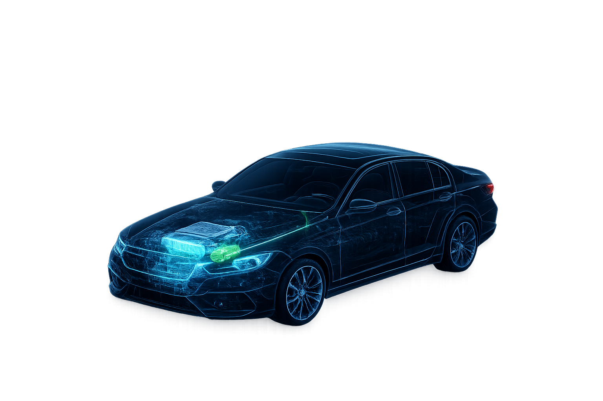

OXLYN DIAGNOSTICS · ISO 15765-4 CAN

Connect the tablet to an ECU first.
Adjust your custom map parameters
Connect the tablet to an ECU first.
| Date/Time | Plate | Operation | Map | Technician |
|---|---|---|---|---|
| No records. | ||||
config.lua. Ask your administrator to change them.